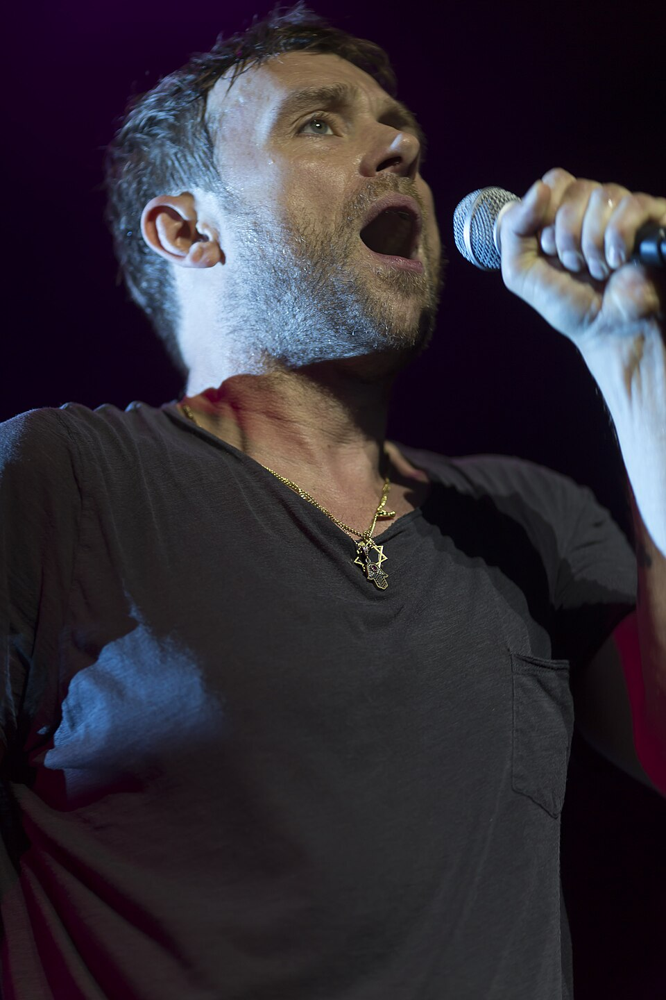

The Battle of Britpop
Track 3
Monday 14 August 1995
The big chart showdown


Blur“Country House”: South, London, art school
Oasis“Roll With It”: North, Manchester, working class
Two singles, one day. It was on the BBC Six O'Clock News, like an election
Which single sold more? Ask the class
Copies sold in the first week
20M+
Blur won the battle. Oasis won the war.Oasis's album “(What's the Story) Morning Glory?” sold more than 20 million copies worldwide.